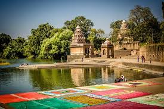

Narayanpet is famous for its handloom sarees. Visitors can explore the weaving process and purchase authentic Narayanpet sarees directly from the weavers.
Cost to Stay: ₹800/night
Peddacheruvu Lake
A tranquil lake that is perfect for a peaceful day out. Boating and birdwatching are popular activities here, especially during the monsoon season.
Cost to Stay: ₹2,129/night

Krishna River Ghat
This viewpoint offers panoramic views of the Krishna River as it flows through the Narayanpet region. It’s an ideal spot for photography and relaxation.